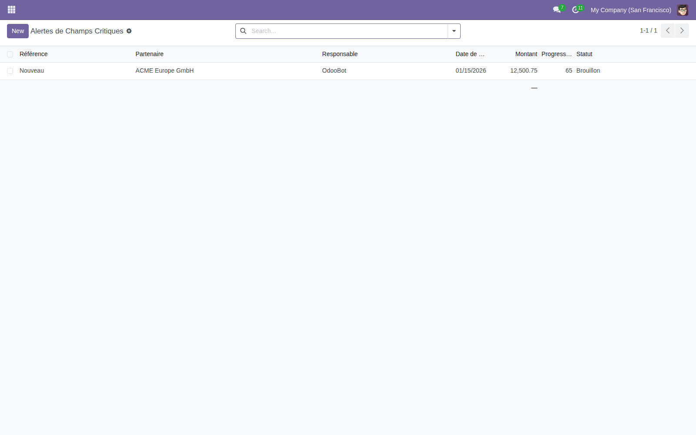
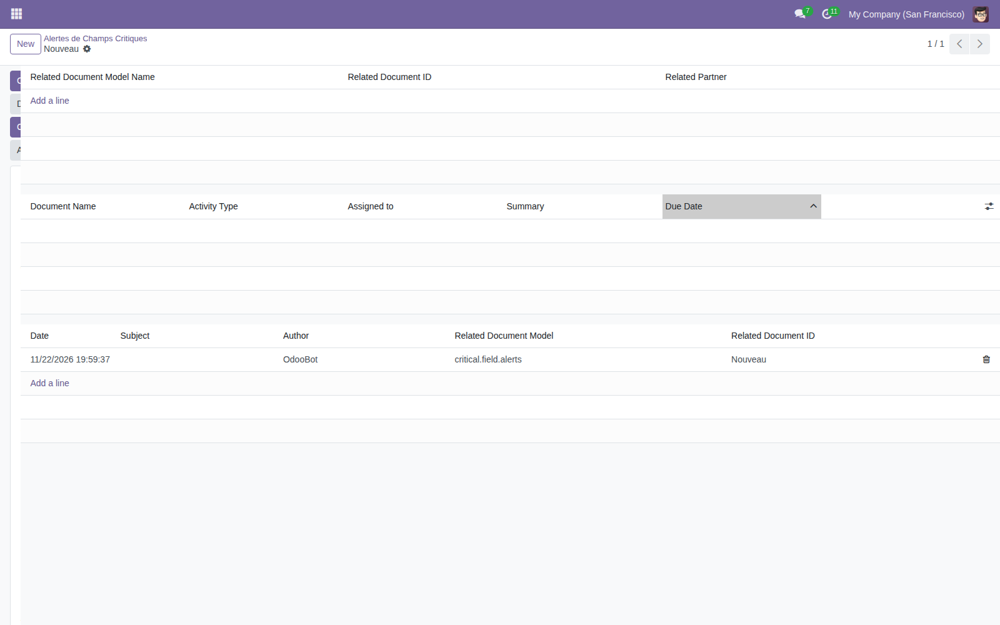

Focused workspace
Dedicated menus, list and form views keep daily work out of crowded generic screens.
Give operations teams a single place to track requests, actions and results.
A focused, production-ready extension designed for productivity & automation teams.
Dedicated menus, list and form views keep daily work out of crowded generic screens.
Access rights, clear statuses and traceable operations protect business data.
English-first content, translated locale files and a clean Odoo architecture.
What teams can do from day one.
Captured from a live Odoo database with realistic demo data.


Typical roles that benefit from this module.
Track requests and actions in one workspace.
Approve and follow up without email chains.
Keep data structured and auditable.
Standard Odoo deployment in a few minutes.
Verified metadata for this build.
| Compatibility | Odoo 20 (Community & Enterprise) |
| Version | 20.0.1.0.0 |
| License | LGPL-3 |
| Dependencies | base, mail |
| Author | ImazighenApps |
| Category | Productivity & Automation |
English is the base language; translation files are included for the following locales.
| 20.0.1.0.0 | Initial release for Odoo 20: focused workspace, access rights, demo-ready views and English documentation. |
Questions, customization or implementation assistance? Our team can help.
imazighenapps@gmail.com